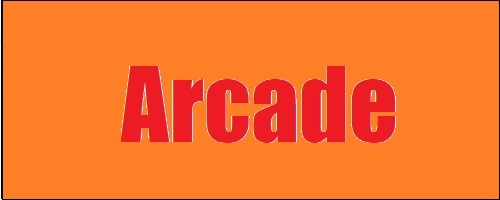
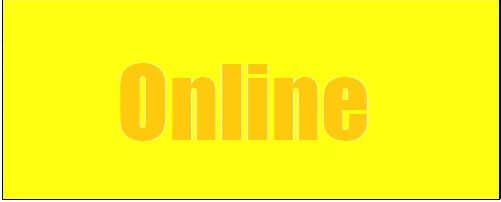

Want to play a game? Select a mode from below :
Please consider that almost all of the games are recommended to be played on Desktops/Laptops with a recommended Resolution of atleast 1350x600 or higher.
How are these games created? How to play them?


Go back to Index
About these Games